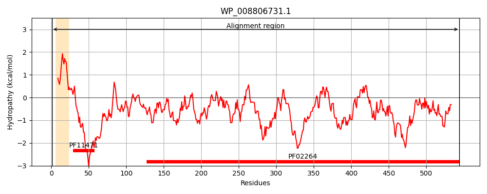
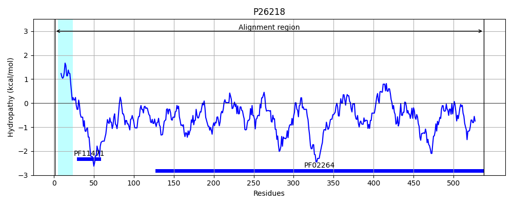
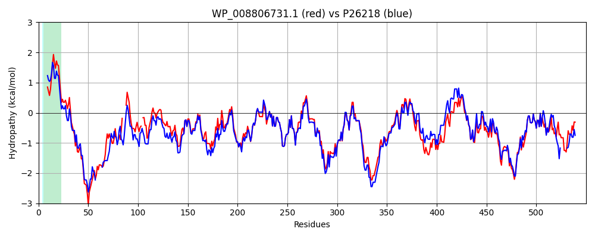

Hit Accession: P26218
Hit TCID: 1.B.3.1.3
Hit Description: gnl|BL_ORD_ID|9577 gnl|TC-DB|P26218|1.B.3.1.3 PUTATIVE OUTER MEMBRANE PROTEIN YIEC PRECURSOR - Escherichia coli.
Mach Len: 550
e:0.000000
Query TMS Count : 1
Hit TMS Count: 1
TMS-Overlap Score: 0.950000
Predicted Substrates:CHEBI:9002;salicin, CHEBI:2806;hydroquinone O-beta-D-glucopyranoside, CHEBI:3522;cellobiose, CHEBI:5318;gentiobiose
BLAST Alignment:
Score: 2212 , Bit scores: 856 bits, E-value: 0.0e+00, Alignment length: 550, Percentage identity: 76
Query: 1 MMRKNRIASAIVLLAPLCYSTTLIASPLTVEQRLELLEKALKDTQKELKKYQDQERKRDQIWASWSPPAEGQKRKTGVA--AAGP---KTAVKPDAVLVKNQQP-ATDGAPAYSAMTLKDFSTFVKDEIGFSYNGYFRSGWGTASHGSPKSWAIGSLGRLGNEYSGWFDLQLKQRVFQEGDKRVDAIVMLDGNVGQQYSSGWFGDNAGGENYIQFSDMYVNTKGFLPFAPEADFWVGKHGAPKIEIQMLDWKTQRTDAAAGVGLENWQVGAGKFDIALVREDVDDYDRSLSNKQQINTNTLDVRYKEIPLWDKASLMVSGRYVAANQSSSEKYKEGNEGYYPWKDTWMAGTSLTQKWANGGFNEFSFLLANNSIASSFSRYAGSSPYTTFNGRYYGDHTNGTAVRLTSQGETYLRDDVIMANAIVYSFGNDVYSYETGAHSDFESIRTVLRPAYIWDKYNQTGVELGYFKQQNKDVTGKKYNESGYKTTLFHTFKVNTSMLTSRPEIRFYATYIKAKDIDLDKAANNTTSIFEDGKNDQFAVGAQAEIWW 544
M R+N I SAI+L+APL +S +A LTVEQRLELLEKAL++TQ ELKKY+D+E+K+ ++P + T AA P +A KPDAVLVKN++ A++ YS+MTLKDFS FVKDEIGFSYNGY+RSGWGTASHGSPKSWAIGSLGR GNEYSGWFDLQLKQRV+ E KRVDA+VM+DGNVGQQYS+GWFGDNAGGENY+QFSDMYV TKGFLPFAPEADFWVGKHGAPKIEIQMLDWKTQRTDAAAGVGLENW+VG GK DIALVREDVDDYDRSL NKQQINTNT+D+RYK+IPLWDKA+LMVSGRYV AN+S+SEK + N GYY WKDTWM GTSLTQK+ GGFNEFSFL+ANNSIAS+F RYAG+SP+TTFNGRYYGDHT GTAVRLTSQGE Y+ D I+ANAIVYSFGND+YSYETGAHSDFESIR V+RPAYIWD+YNQTGVELGYF QQNKD K+NESGYKTTLFHTFKVNTSMLTSRPEIRFYATYIKA + +LD FED K+DQFAVGAQAEIWW
Sbjct: 1 MFRRNLITSAILLMAPLAFSAQSLAESLTVEQRLELLEKALRETQSELKKYKDEEKKK------YTPATVNRSVSTNDQGYAANPFPTSSAAKPDAVLVKNEEKNASETGSIYSSMTLKDFSKFVKDEIGFSYNGYYRSGWGTASHGSPKSWAIGSLGRFGNEYSGWFDLQLKQRVYNENGKRVDAVVMMDGNVGQQYSTGWFGDNAGGENYMQFSDMYVTTKGFLPFAPEADFWVGKHGAPKIEIQMLDWKTQRTDAAAGVGLENWKVGPGKIDIALVREDVDDYDRSLQNKQQINTNTIDLRYKDIPLWDKATLMVSGRYVTANESASEKDNQDNNGYYDWKDTWMFGTSLTQKFDKGGFNEFSFLVANNSIASNFGRYAGASPFTTFNGRYYGDHTGGTAVRLTSQGEAYIGDHFIVANAIVYSFGNDIYSYETGAHSDFESIRAVVRPAYIWDQYNQTGVELGYFTQQNKDANSNKFNESGYKTTLFHTFKVNTSMLTSRPEIRFYATYIKALENELDGFT------FEDNKDDQFAVGAQAEIWW 538 | Protein Hydropathy Plots: |
|---|
|  |  |
Pairwise Alignment-Hydropathy Plot:
|
|---|
|  |